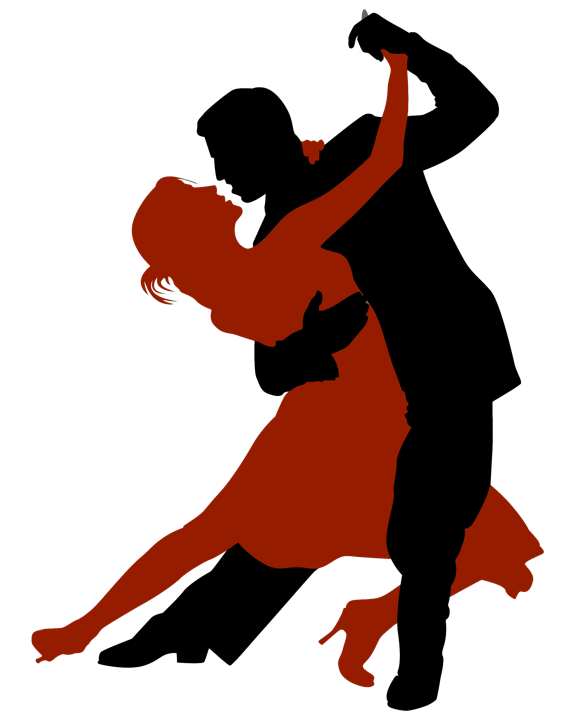

Bachata
La bachata es un ritmo musical de percusión y cuerdas originario de la República Dominicana, que tiene sus raíces en el son cubano y los ritmos africanos. Entre los instrumentos primarios se encuentran las guitarras, las marimbas, las maracas, la güira, los bongos y los timbales. El estilo musical es un híbrido, derivado de una mezcla del bolero y otros ritmos latinos y caribeños. Tiene sus inicios a comienzos del siglo XX.

En la actualidad existen numerosos bachateros que experimentan con diferentes estilos musicales, tales como el rap, el bolero, el blues o el reggaetón, para crear nuevas modalidades bachateras. Muchos bachateros han logrado su sueño de saltar a la fama y ganar dinero para ellos y sus familias. Otros, sin embargo, a pesar de su grandioso talento, siguen en el anonimato y la pobreza, esperando ser descubiertos por alguien que los ayude a alcanzar la fama. Éste ha sido el caso del gran bachatero Joan Soriano, conocido localmente por “el duque”, que hasta hace poco vivía en el anonimato con su familia.
¡Aqui una lista para bailar con las mejores canciones de bachata!
-
Bachata Rosa – Juan Luis Guerra.
-
Propuesta Indecente – Romeo Santos.
-
Obsesión – Aventura.
-
Darte un Beso – Prince Royce.
-
Voy Pa' Lla – Anthony Santos.
-
Eres Mía – Romeo Santos.
-
Corazón Sin Cara – Prince Royce.
-
Incondicional – Prince Royce.
lista de reproducción
Inscripciones
Horarios
